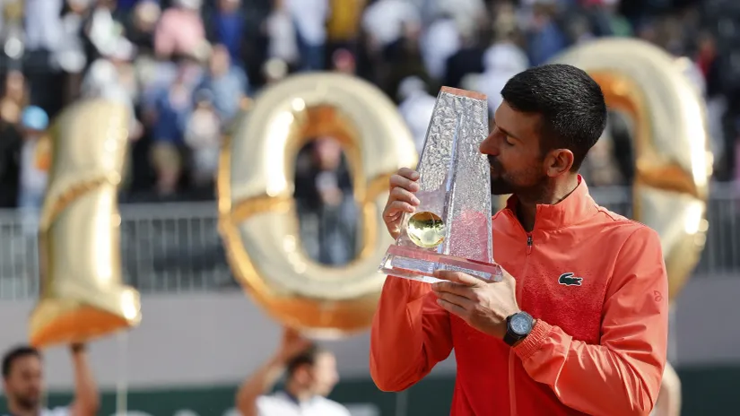

Besmrtni Novak pretvorio bes u zlato! Sto razloga da ga se plaše na Rolan Garosu
Đoković pokorio Ženevu i osvojio 100. titulu u karijeri! Ličio je Hubert Hurkač na momente na Rafu Nadala, ali nije sprečio jubilej
Kada su osmog aprila, pred početak mastersa u Monte Karlu, novinari upitali Novaka Đokovića o scenariju da stota titula u karijeri dođe na nekom od grend slem turnira, najveći svih vremena replicirao - "Ako mi kažete da ću tu stotu titulu osvojiti na bilo kom slemu ove godine, potpisaću odmah."
Ta opcija više nije dostupna, poput mobilnog pretplatnika kada vam je najpotrebniji. Jer srpski as je veliki teniski jubilej kakvim mogu da se pohvale samo Džimi Konors (109) i Rodžer Federer (103), zaokružio u Ženevi! U frustrirajućem, tesnom, napetom finalu, u kojem je Hubert Hurkač na momente umeo da zaliči na Rafaela Nadala i natera Đokovića na nekoliko udaraca više da bi zaslužio poen, okrenuo je Poljaka iako je dobrim delom meča odisao energijom koja nije ulivala entizijazam i veru u trijumf - 1:2 (7:5, 6:7, 6:7).
Dolazi Novak Rolan Garos sa obnovljenom šampionskom aurom, a u torbi sa reketima i nosi još 100 razloga da ga se konkurencija u Bulonjskoj šumi ponovo pribojava kada krene u pohod na 25. grend slem titulu. Verovatno se i Novaku smučilo da sluša sve glasnije priče kako su rivali prestali da strahuju od njegove pojave i tenisa, pa im je prethodnih dana protiv Martona Fučoviča, Matea Arnaldija i Kamerona Norija pokazao koliko je motivisan, a tokom popodneva koliko je tanka granica od frustracije i besa do vučjeg pogleda i dominacije koja donosi preokrete i pobede.